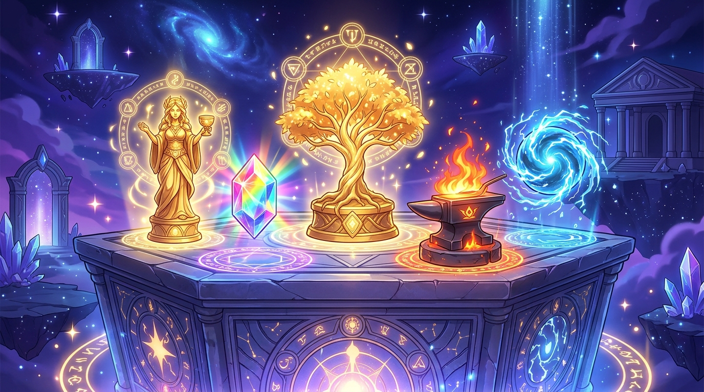

Trang chủ Đại Bách Khoa / Thư Viện Chi Tiết (Sự Kiện, Hỗn Mang & Mùa Giải) / Lộ Trình Ngày Server S0–S7 APEX/Nova, Bingo 32 Vé & Reset 128 ★
Lộ Trình Ngày Server S0–S7 APEX/Nova, Bingo 32 Vé & Reset 128 ★

Mục Lục Bài Chi Tiết
1. Bốn Mốc Vàng Từ Đầu Mùa 1 Tới Ngày Reset (~Ngày 45–47)
- ~Ngày 14 (Kỳ 2 Kho Báu + Lucky Bingo): Săn bằng được Tượng Thần May Mắn (0★ đã cho +10% x2 thưởng Phó Bản). Chuyển Bậc 3 yêu cầu:
Lv.82 + Tổng Nghề 48 + Bậc 2 Lv.16 + Aqualis 9. - ~Ngày 20–21 (Cấp 90 Anh Hùng III + Cào Thẻ + Kỳ 3): Xả Dụng Cụ Bí Cảnh (~400 lượt) cho Sự Kiện Cào Thẻ & chạm đúng
128 Sao Nguyên Thủyrồi dừng! Kỳ 3 mốc 5 tặng 180 Mảnh Kỹ Năng Bậc 3 tự chọn (giữ chọn cho nghề gắn bó lâu dài). - Ngày 24 (Cấp 100): Mở đồng loạt Đền Nguyên Thủy (930K / 1.45M / 2.05M CP), Đổi Nghề Bảo Toàn Kỹ Năng và Lực Chiến Mùa. Ngày 26 mở bản đồ mùa mới.
- Ngày 33 → 45–47 (Gác Hoàng Tuyền & Hết Mùa): Gác Hoàng Tuyền đòi 2.25M / 2.75M / 6.2M CP. Tích Năng Lượng Kho Báu (3,240 NL/kỳ) cho Kỳ 5 (~N36: Rương Cổ Vật Đỏ Đầm Lầy) và Kỳ 6 (~N43: Tượng May Mắn lần 2).
2. Bài Toán Lucky Bingo 32 Vé & Chu Kỳ 3 Tuần Sự Kiện Phụ
- Bingo (~N14, ~N35): 2 bảng × 16 ô =
32 vé. Làm đủ 7 ngày NV ngày (4 vé/ngày: Đăng nhập + 60 Thể Lực + 3 trận Đấu Trường + 1 Fantomon) thu28 vé(vé KHÔNG tích dồn sang hôm sau!). Thiếu 4 vé = 80 lượt Dò Tìm Vận Mệnh (20 lần/vé); trừ ~60 Quả phát miễn phí trong tuần chỉ cần thủ sẵn20–30 Quả Vận Mệnhvà đợi Bingo mở mới dò! - Tuần 2 (~N21 Cào Thẻ): Cần ~400 lượt đào Bí Cảnh. Tuần 3 (~N28 Giải Đố): Phát free
18 Quả Vận Mệnh + 6 Khế Ước Sao.
3. Phân Loại 3 Nhóm Tài Nguyên & 2 Mẹo Chốt Giờ Cuối Mùa
- Nhóm 1 — Xả & Bán Sớm: Mảnh Trang Bị dư mất giá nặng khi sang mùa mới → bán lúc còn giá, chỉ giữ ~300 mảnh mang dòng phụ đầu tiên qua mùa.
- Nhóm 2 — Xả Đủ Điểm Ở Cấp 90: Xả Dụng Cụ Bí Cảnh ở Cào Thẻ vừa đủ mốc
128 ★cho F2P rồi dừng tay. - Nhóm 3 — Giữ Qua Mùa Mới: Bí Cảnh còn dư (mùa sau rớt nhiều hơn!), Đá Thô, Cát Thời Gian, Thẻ Nữ Thần, 20–30 Quả cho Bingo, NL Kho Báu & Vé/Khế Ước Sao.
- 2 Mẹo Cuối Mùa: Mặc bộ trang bị xịn nhất lên người trước giờ hết mùa (khóa Tủ Trưng Bày SSS) và tích Thể Lực đúng mốc 300!